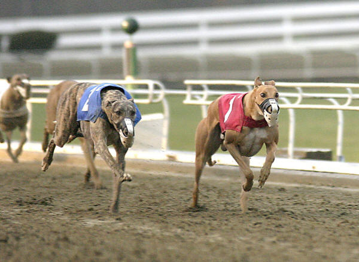

Places to see in Clonmel.
GreyHound Track

Whether you're a casual passer-by attracted by the roar of the crowd and the electricity in the air, or a corporate organiser looking for something to do, both Shelbourne Park and Harolds Cross supply everything you'll need to have a great night out.
We pride ourselves on our ability to deliver an outstanding night's entertainment, making another night in the local pub or restaurant look just a little lacklustre by comparison.
And even if you're not normally a betting person, we assure you that the excitement and anticipation of participation will soon have you captivated.
We welcome everyone to the stadia, the serious dog-watcher, the after-work crowd looking for something better than a night in a smoky pub, the clubs after a comfortable and well-organised evening out, the corporate outings. Whatever your need, we'll cover it.
Whether you arrive out of the blue or opt for one of our group specials (the midweek 'Sizzlers' special is extremely popular), you'll receive the best in quality and service, in a special environment which presents all the excitement of the world's leading greyhound stadia in a luxurious, atmospheric setting.
© 2004 Places to see in Clonmel.
I